Slide 8 — Diagnostic (Model Validation) 39 หน้า และ FORECAST_AND_SARIMA หน้า 1–13 (Forecasting) · คลิป Class 8 (0:26–1:23) และ Class 9-2 (1:13–1:17)
Lesson 7 จบที่ "โมเดลในใจ 2–3 ตัว" พร้อมค่าพารามิเตอร์ บทนี้ตอบว่าตัวไหนใช้ได้จริง และใช้แล้วพยากรณ์อย่างไร อาจารย์บอกว่าการตรวจโมเดลคือ "ขั้นตอนที่มนุษย์ยังต้องทำอยู่" แม้ในยุค auto.arima (Class 8, 0:02:05)
| หัวข้อ | เนื้อหา | สไลด์ |
|---|---|---|
| 1 | Residual และ standardized residual | Slide 8: 1–4 |
| 2 | Normality ของ residual | Slide 8: 5–6 |
| 3 | ACF ของ residual และ Ljung-Box | Slide 8: 7–10 |
| 4 | ข้อมูลจริง 1: อุณหภูมิโลก | Slide 8: 11–17, 21–24 |
| 5 | Difference ก่อนหรือใส่ไว้ใน ARIMA | Slide 8: 18–20 |
| 6 | ข้อมูลจริง 2: aerosol particle size | Slide 8: 25–39 |
| 7 | หลักการพยากรณ์: BLUP, one-step และ multi-step | FORECAST: 1–13 |
| 8 | พยากรณ์ใน R และ prediction interval | — (R_codes Class 8) |
| 9 | แบบฝึกห้าแบบ | — |
อาจารย์เปิดหัวข้อนี้ด้วยการเทียบกับ regression ในวิชาอื่น: ประเมินโมเดลได้สองด้าน คือความแม่นยำของการพยากรณ์ และการตรวจ assumption ต่างกันตรงที่ใน time series "เราจะไม่ค่อยแก้หรอก ... แต่เราเช็ค" (Class 8, 0:26:01–0:27:20) ถ้าไม่ผ่าน ก็กลับไปเลือกโมเดลใหม่
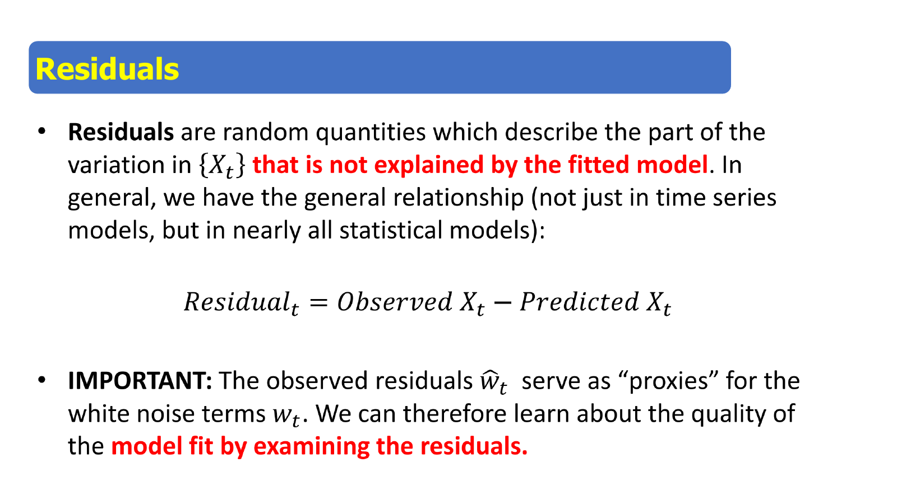
residual คือส่วนของ X ที่ that is not explained by the fitted model หรือ ค่าจริง ลบ ค่าที่โมเดลทำนาย สไลด์เน้นว่า residual \(\hat w_t\) เป็นตัวแทนของ white noise \(w_t\) ที่สังเกตไม่ได้ เราจึงตรวจ model fit by examining the residuals. ตรรกะคือ ถ้าโมเดลจับความสัมพันธ์ข้ามเวลาไว้ครบแล้ว สิ่งที่เหลือต้องไม่มีโครงสร้างอะไรอีก ตัวอย่าง: ถ้าข้อมูลจริงเป็น AR(1) แต่ฟิตเป็น white noise residual ก็คือข้อมูลเดิมซึ่งยังมี ACF lag 1 สูง แปลว่าโมเดลยังขาดอะไร
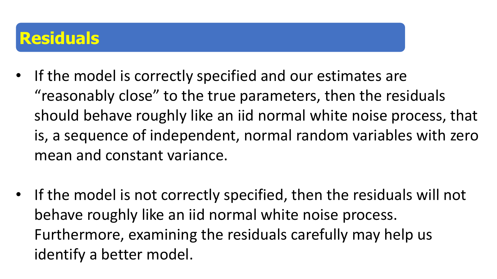
ถ้าโมเดลถูกและค่าประมาณใกล้ค่าจริง residual ควรเป็น iid normal: อิสระกัน, normal, mean 0, variance คงที่ (Class 8, 0:28:04–0:28:59) ถ้าไม่เป็นแบบนั้น รูปแบบที่เหลืออยู่ใน residual ยังช่วยบอกว่าโมเดลที่ดีกว่าควรเป็นอย่างไร เช่น residual ที่ยังมี ACF ที่ lag 12 บอกว่าต้องเพิ่ม seasonal
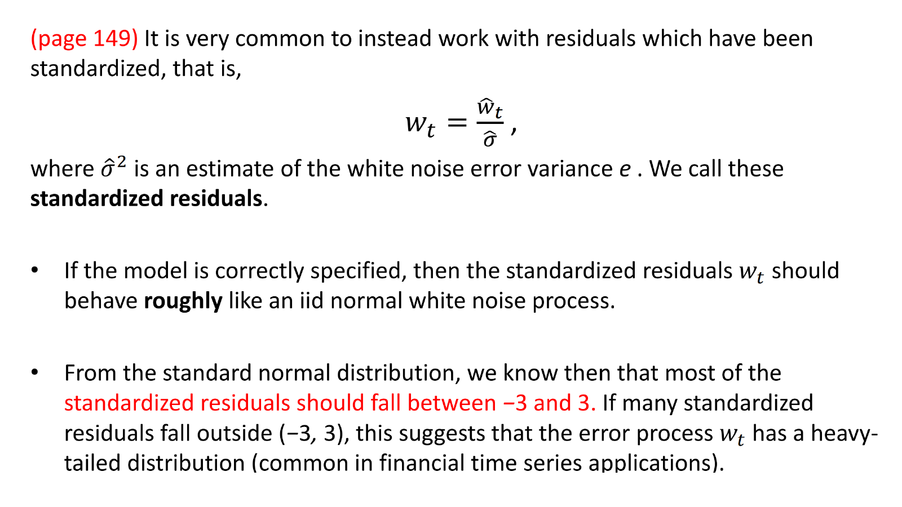
standardized residual คือ residual หารด้วย σ̂ เพราะ mean เป็น 0 อยู่แล้ว ค่าจึงควรใกล้ N(0,1) (Class 8, 0:29:09–0:30:17) ประโยชน์คือใช้หา outlier ด้วย empirical rule: ±1 SD ครอบคลุมราว 68% ±2 SD ราว 95% และ ±3 SD ราว 99.7% (ในคลิปอาจารย์พูด "ประมาณ 64%" และ "99.6" ค่าที่ถูกคือ 68% และ 99.7%) สไลด์จึงบอกว่า standardized residuals should fall between −3 and 3. ข้อมูล 150 ค่าคาดว่าจะเกิน ±3 ได้ราว 150 × 0.003 = 0.45 จุด จุดเดียวสองจุดจึง "ไม่เป็นไร แต่ถ้ามีหลาย ๆ จุด model นั้นอาจจะไม่เหมาะ" (Class 8, 0:32:51–0:33:59) ถ้ามีจำนวนมาก แปลว่า error มีหางหนา ซึ่งพบบ่อยในข้อมูลการเงิน
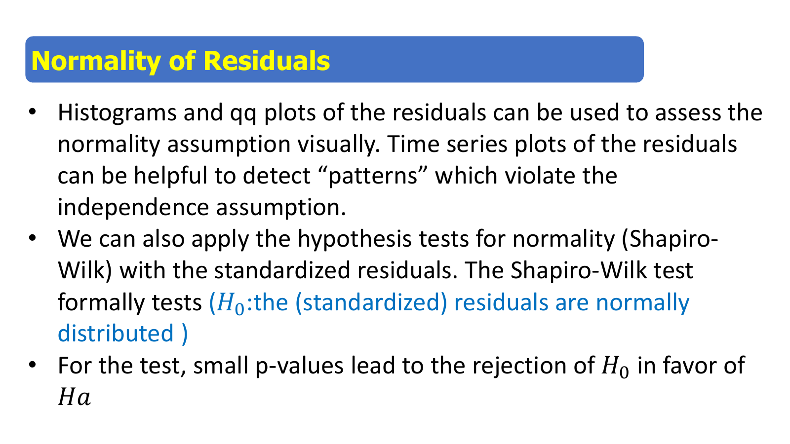
ตรวจ normality ได้สองทาง: กราฟ (histogram และ QQ plot) กับการทดสอบ Shapiro-Wilk ซึ่ง H0 คือ standardized residual แจกแจง normal p-value น้อยจึง reject normality อาจารย์สรุป "p-value มาก → fail to reject → normal" (Class 8, 0:34:06–0:34:46) วิธีอ่าน QQ plot: แกนนอนคือ quantile ของ normal แกนตั้งคือ quantile ของ residual ถ้า normal จุดจะเรียงตามเส้นตรง ถ้าปลายสองข้างแยกออกจากเส้นแปลว่าหางหนากว่า normal
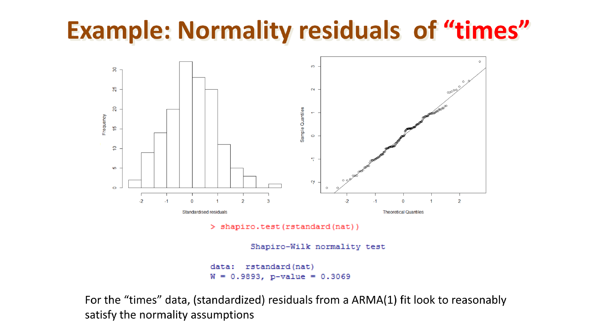
ARMA(1,1) ของ times จาก Lesson 7 ได้ shapiro.test(rstandard(nat)): W = 0.9893, p-value = 0.3069 มากกว่า 0.05 จึงไม่ reject H0 ถือว่า normal QQ plot จุดเรียงตามเส้นเกือบทั้งหมด (Class 8, 0:35:00–0:36:46) histogram สมมาตรรอบศูนย์ standardized residual ที่ไกลสุดคือ 3.20 ที่ t = 101 เกิน 3 เพียงจุดเดียว ตามข้อคำนวณข้างบนยังยอมรับได้
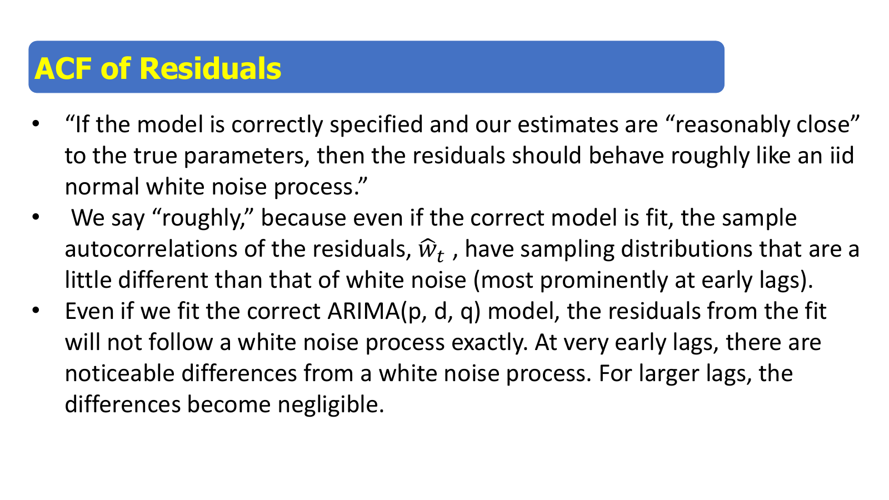
"เราเอาความสัมพันธ์ไปแล้วอยู่ในโมเดล ARIMA เรียบร้อยแล้ว error term ก็ไม่ควรจะสัมพันธ์กัน" (Class 8, 0:36:54) จึงดู ACF ของ residual ซึ่งควรอยู่ในเส้นประทุก lag สไลด์ใช้คำว่า roughly เพราะแม้โมเดลถูก ค่า ACF ของ residual ก็มีการแจกแจงต่างจาก white noise เล็กน้อย โดยเฉพาะที่ lag ต้น ๆ เพราะ residual คำนวณจากพารามิเตอร์ที่ประมาณจากข้อมูลชุดเดียวกัน
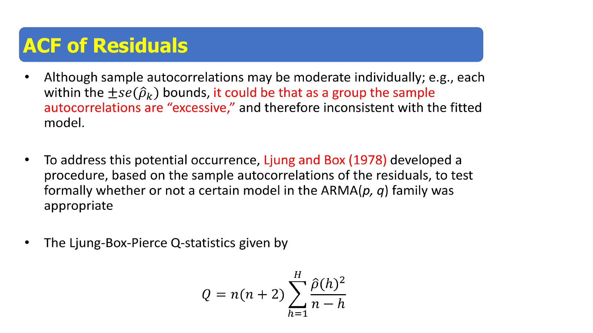
ปัญหาของการดูทีละ lag: แต่ละ lag อาจอยู่ในเส้นทั้งหมด แต่ it could be that as a group the sample autocorrelations are “excessive,” คือรวมกันแล้วมากเกินไป Ljung and Box (1978) จึงเสนอสถิติที่รวม lag 1 ถึง H ไว้ด้วยกัน
\(Q=n(n+2)\sum_{h=1}^{H}\dfrac{\hat\rho(h)^2}{n-h}\)
ถ้าโมเดลเหมาะสม Q แจกแจงประมาณ χ² ที่ df = H − p − q ยกกำลังสองทำให้ค่าบวกและลบไม่หักล้างกัน และน้ำหนัก 1/(n − h) ชดเชยที่ lag สูงมีคู่ข้อมูลน้อยกว่า อาจารย์บอกว่า "ไม่ต้องดู Q statistic ดู p-value" (Class 8, 0:38:05)
n = 100 residual ของ MA(1) มี ACF ที่ lag 1, 2 เท่ากับ 0.2 และ 0.1 ใช้ H = 2
\(Q=100(102)\left(\dfrac{0.04}{99}+\dfrac{0.01}{98}\right)=10200(0.000404+0.000102)=5.16\)
df = H − q = 2 − 1 = 1 ค่าวิกฤต χ²(1) ที่ 5% คือ 3.84 เนื่องจาก 5.16 > 3.84 จึง reject H0 โมเดลยังไม่เหมาะสม
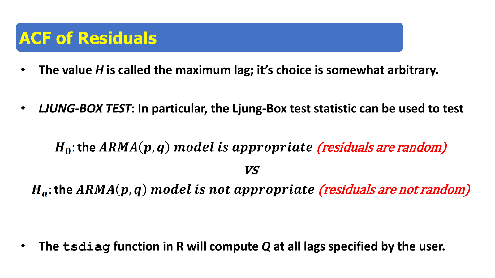
สมมุติฐานที่อาจารย์ให้จด: H0 คือ ARMA(p,q) เหมาะสม (residuals are random) H1 คือไม่เหมาะสม (residuals are not random) "ไม่ได้เช็คว่าสัมพันธ์กันหรือเปล่า มันเช็คว่าโมเดลที่คุณได้เหมาะหรือเปล่า ... มีความเป็น random ไหม" (Class 8, 0:38:05–0:39:03) H คือ lag สูงสุดซึ่งเลือกได้ค่อนข้างอิสระ tsdiag() ของ TSA คำนวณ Q ทุก H ตั้งแต่ 1 ถึงค่าที่กำหนด และ "ทุก lag อยากให้ p-value มาก" (Class 8, 0:39:59)
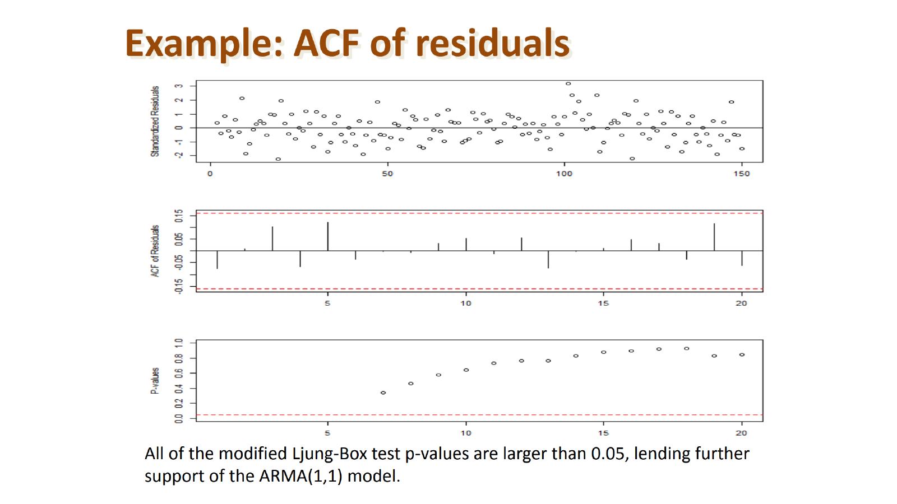
tsdiag(nat, gof.lag = 20) ให้สามกราฟ (Class 8, 0:42:41–0:46:41) กราฟแรก standardized residual ตามเวลา มีจุดราว t = 100 เกิน 3 นิดเดียว "ไม่เป็นไร" กราฟที่สองคือ ACF ของ residual: ค่าที่ lag 1–3 คือ −0.072, 0.007, 0.109 อยู่ในเส้นทั้งหมด กราฟที่สามคือ p-value ของ Ljung-Box แต่ละ H เทียบเส้นประ 0.05 คำนวณเองด้วย Box.test(residuals(nat), lag = H, type = "Ljung", fitdf = 2) ได้ 0.139, 0.644, 0.881, 0.843 ที่ H = 5, 10, 15, 20 เกิน 0.05 ทุกค่า จึงสรุปว่า ARMA(1,1) ผ่าน อาจารย์เสริมว่า "ถ้ามีจุดบางจุดอยู่ใต้เส้นน้ำเงิน ก็แสดงว่าแลกนั้นอาจจะไม่เหมาะ ... มีแค่สองจุดยังโอเค" และ arima() "ออโตเมติกไม่เช็ค ... พวกนี้คุณต้องทำด้วยมืออยู่" (Class 8, 0:41:30)
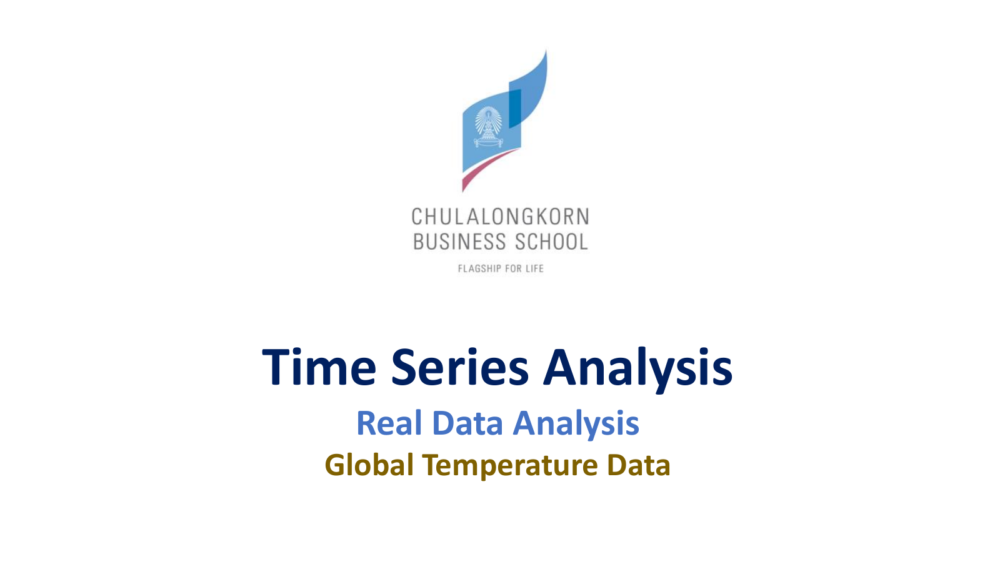
ส่วนนี้คือ "full data analysis" ครบทุกขั้นที่ข้อสอบภาคปฏิบัติจะถาม: plot → ตัดสิน d → ACF/PACF → AIC/BIC → estimation → เขียนโมเดล → diagnostic
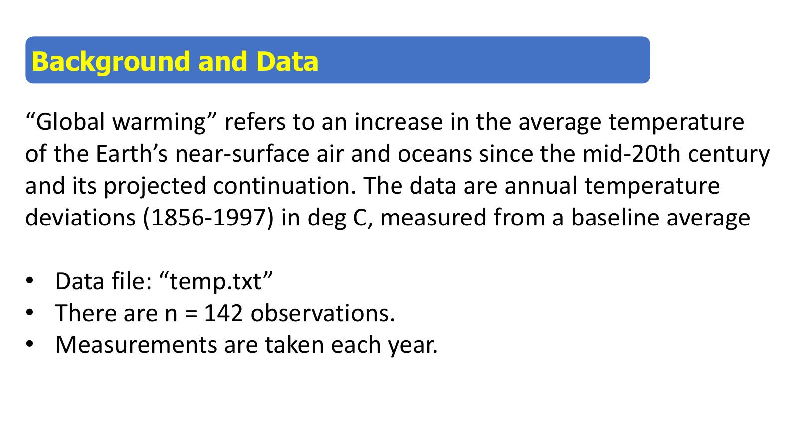
ข้อมูลคือค่าเบี่ยงเบนของอุณหภูมิเฉลี่ยรายปี 1856–1997 จำนวน n = 142 (Class 8, 0:48:05) ชุดเดียวกับที่ใช้ใน Lesson 2–3 แต่ Lesson 3 ใช้ช่วงตั้งแต่ปี 1900 ข้อมูลรายปี "อาจจะไม่ค่อยมี seasonal"
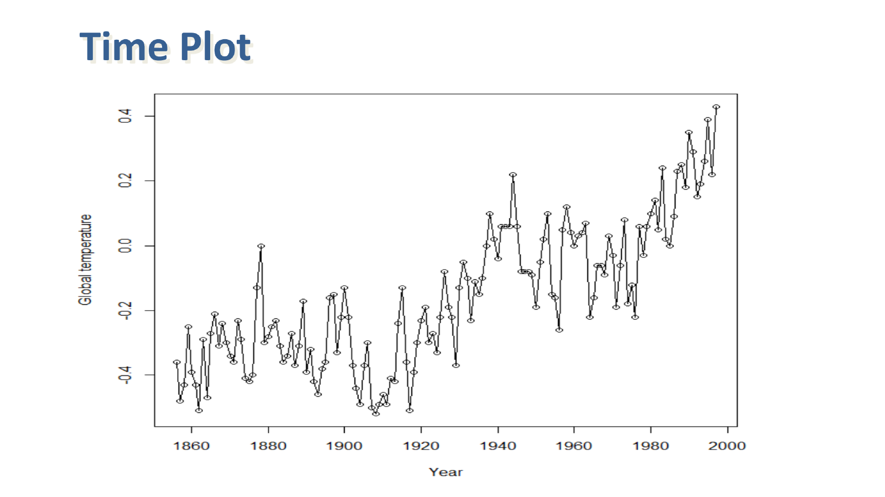
อนุกรมอยู่ราว −0.4 ในช่วงปี 1860–1910 แล้วขึ้นมาราว 0.4 ปลายทศวรรษ 1990 จึงมี trend ขาขึ้น ความแกว่งรอบ trend ใกล้เคียงกันตลอด อาจารย์จึงสรุปว่า "ไม่ต้อง take log เพราะแกว่งเท่า ๆ กัน" (Class 8, 0:49:13)
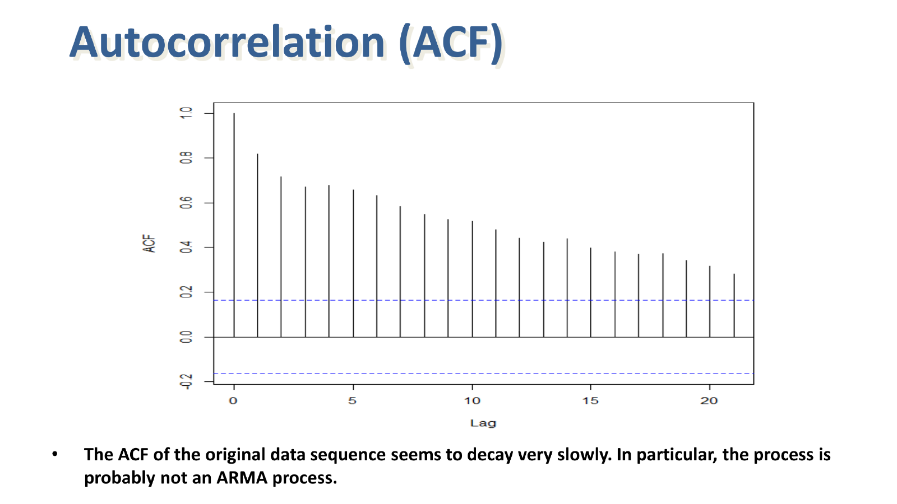
ACF = 0.817, 0.717, 0.669 และยังเกิน 0.2 ถึง lag 20 สไลด์สรุปว่า "probably not an ARMA process" อาจารย์อธิบาย "ไม่ได้เกิดจาก AR นะ มันเกิดจาก non-stationary ที่มาจาก trend" (Class 8, 0:49:47) จึงใช้ d = 1
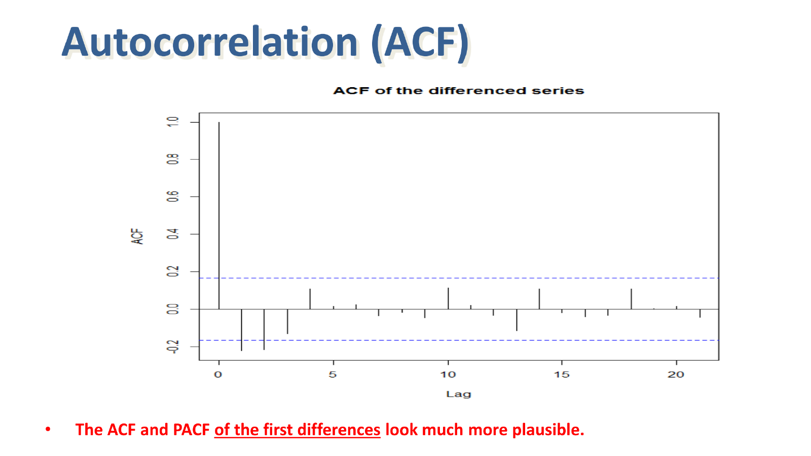
หลัง difference ACF = −0.223, −0.217, −0.132, 0.107 ทะลุเส้น ±0.168 (2/√141) ที่ lag 1–2 แล้วอยู่ในเส้น จึงอาจเป็น MA(2) สไลด์เขียนว่า ACF และ PACF of the first differences look much more plausible. คือดูเป็นอนุกรมนิ่งแล้ว
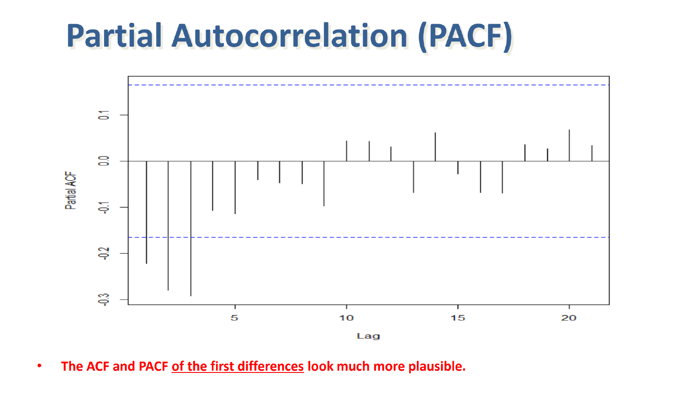
PACF = −0.223, −0.281, −0.293, −0.107 ทะลุเส้นที่ lag 1–3 จึงอาจเป็น AR(3) อาจารย์ตั้ง candidate ว่า p ≤ 3 และ q ≤ 2 "จะมีในใจ 2–3 model" แล้วให้ AIC/BIC ช่วยเลือก (Class 8, 0:50:35–0:51:36)
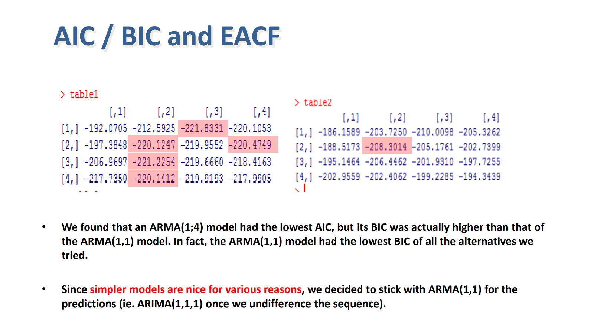
ตารางสร้างแบบเดียวกับ Lesson 7 (แถว p = 0–3 คอลัมน์ q = 0–3) อาจารย์อ่านจากคลิป: AIC ต่ำสุดอยู่ช่อง [1,3] = −221.83 คือ ARMA(0,2) และกลุ่มที่ใกล้กันคือ ARMA(2,1) −221.23, ARMA(1,3) −220.47, ARMA(1,1) −220.12 ส่วน BIC ต่ำสุดคือ [2,2] = −208.30 คือ ARMA(1,1) สไลด์เขียนว่า "ARMA(1;4) model had the lowest AIC" ซึ่งไม่ตรงกับตาราง (ตารางมี q ถึง 3 เท่านั้น) น่าจะเหลือจากเวอร์ชันเก่า อาจารย์บอกว่า "สไลด์นี้ผมทำมาโบราณ ... 10 ปีที่แล้ว" (Class 8, 0:51:48) ข้อสรุปของสไลด์ใช้ได้: เลือก ARMA(1,1) ของ ∇X_t เพราะ simpler models are nice for various reasons จึงได้ ARIMA(1,1,1)
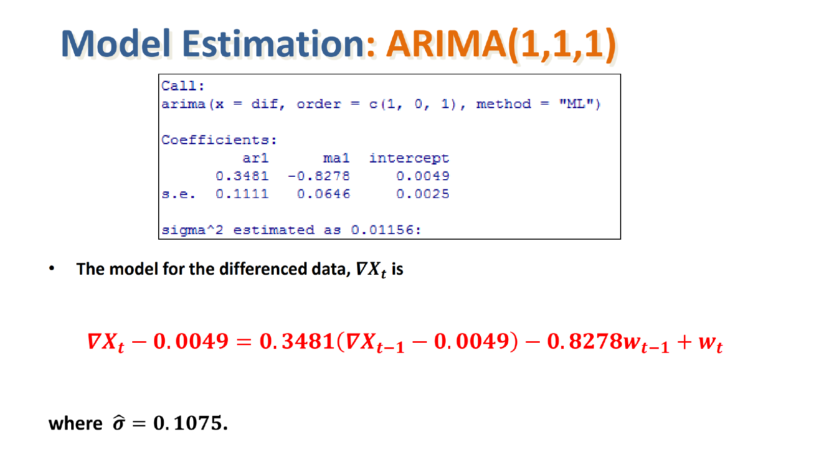
output นี้ฟิต ARMA(1,1) กับผลต่าง (แบบ diff ก่อน) ขั้นตอนการแปลงตัวเลขเป็นสมการอยู่ในกล่องข้างล่าง
arima(dif, order = c(1,0,1), method = "ML"): ar1 = 0.3481, ma1 = −0.8278, intercept = 0.0049, σ² = 0.01156
"ฟีเอามาจาก AR1 ... เตต้ามาจาก MA1 ... เตต้าคุณติดลบ ก็กลายเป็นลบ 0.8278" intercept คือ mean ของ ∇X_t
\(\nabla X_t-0.0049=0.3481(\nabla X_{t-1}-0.0049)-0.8278w_{t-1}+w_t\)
\(\hat\sigma=\sqrt{0.01156}=0.1075\)
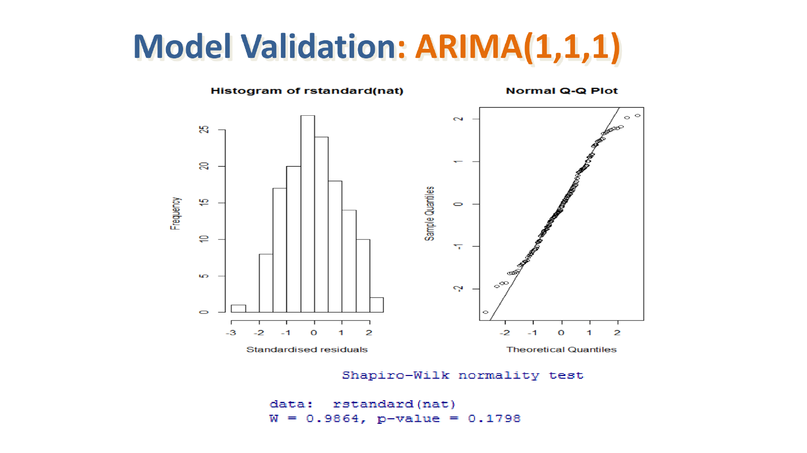
Shapiro-Wilk: W = 0.9864, p-value = 0.1798 มากกว่า 0.05 จึงถือว่า normal histogram สมมาตรรอบศูนย์ และ QQ plot เรียงตามเส้น ยกเว้นจุดปลายล่างสองสามจุดที่ต่ำกว่าเส้นเล็กน้อย (Class 8, 1:09:38)
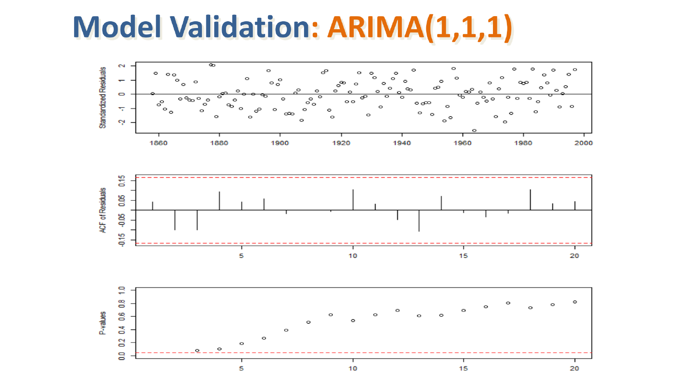
standardized residual อยู่ในช่วง ±3 ทั้งหมด ACF ของ residual อยู่ในเส้น และ p-value ของ Ljung-Box (fitdf = 2) ที่ H = 5, 10, 15, 20 คือ 0.182, 0.538, 0.693, 0.823 เกิน 0.05 ทุกค่า จุด p-value ช่วง lag ต้น ๆ ในกราฟของ tsdiag อยู่ต่ำกว่าส่วนอื่นแต่ยังอยู่เหนือเส้น 0.05 ARIMA(1,1,1) จึงผ่าน (Class 8, 1:10:49) ในโค้ดที่ให้มาไม่มีส่วน diagnostic ของข้อมูลนี้ อาจารย์ให้ copy จากส่วนของ times มาเติมเป็นการบ้าน
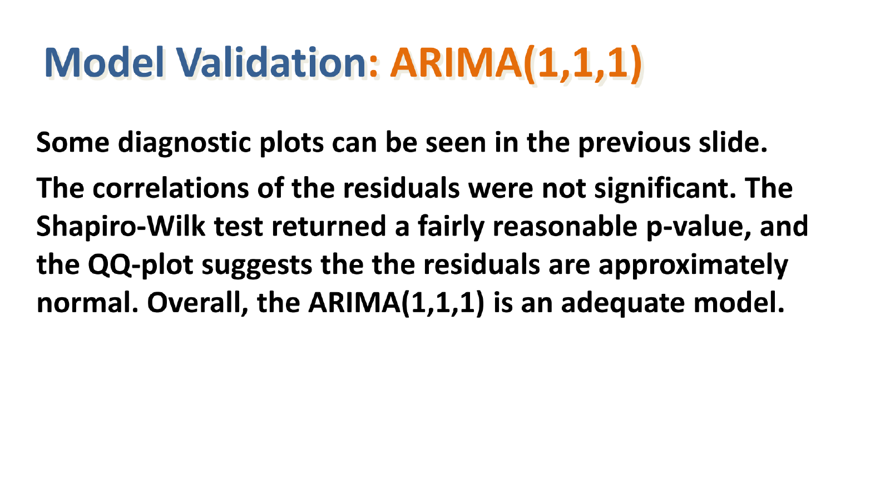
ข้อสรุปของสไลด์รวมสามหลักฐาน: residual ไม่มี correlation ที่มีนัยสำคัญ, Shapiro-Wilk ให้ p-value สมเหตุสมผล และ QQ plot ใกล้ normal ดังนั้น ARIMA(1,1,1) เพียงพอ รูปแบบการสรุปนี้ใช้เป็นแม่แบบตอบข้อสอบภาคปฏิบัติได้
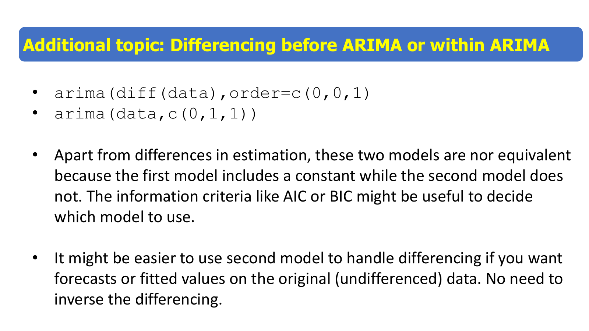
มีสองวิธีฟิตโมเดลเดียวกัน: arima(diff(data), order = c(p,0,q)) คือ difference เองก่อน หรือ arima(data, order = c(p,1,q)) ให้ R difference ภายใน สไลด์บอกว่าสองแบบไม่เท่ากัน เพราะแบบแรกมีค่าคงที่ แบบที่สองไม่มี และแบบที่สองสะดวกกว่าถ้าต้องการค่าพยากรณ์หรือค่า fitted บนข้อมูลเดิม
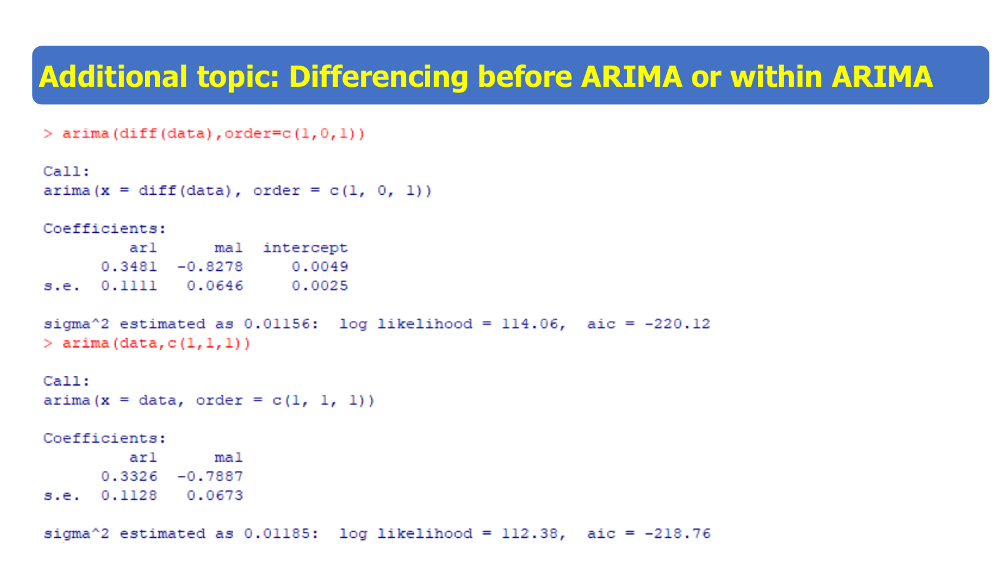
แบบ diff ก่อน: ar1 = 0.3481, ma1 = −0.8278, intercept = 0.0049, σ² = 0.01156, aic = −220.12 แบบ d ใน arima: ar1 = 0.3326, ma1 = −0.7887 ไม่มี intercept, σ² = 0.01185, aic = −218.76 "เหมือนกันไหม ... ไม่เหมือนกัน ต่างกันนิดหนึ่ง" (Class 8, 0:53:22–0:57:04) ต่างกันเพราะแบบแรกประมาณ mean ของผลต่าง (drift) ด้วย
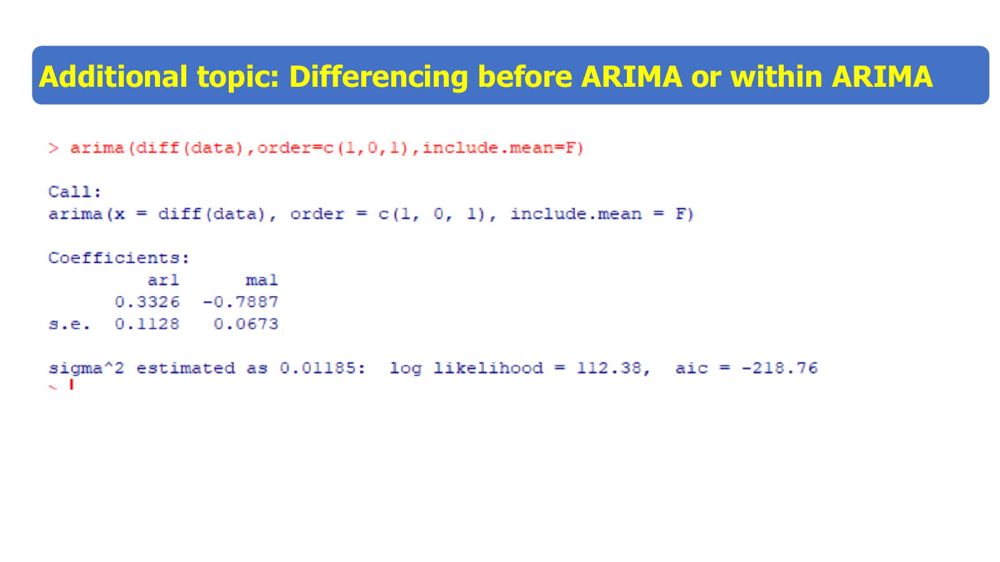
เมื่อใส่ include.mean = FALSE ในแบบแรก ได้ ar1 = 0.3326, ma1 = −0.7887, σ² = 0.01185 เท่ากับแบบที่สองทุกตัว "จะเหมือนกันเลย" (Class 8, 0:57:04) จึงยืนยันว่าความต่างมาจาก intercept อย่างเดียว อาจารย์ "แนะนำใช้ข้างล่าง" (ใส่ d ในคำสั่ง) เพราะแบบแรก forecast ได้ค่าผลต่าง ต้อง undifference เอง และเล่าว่าตัวเองก็เคยพลาดตอนเรียน (Class 8, 0:58:07–1:00:06)
predict(f1, n.ahead = 3)$pred = −0.0791, −0.0243, −0.0052 ถ้านำไปเทียบกับอุณหภูมิจริงที่ราว 0.4 จะผิดทันที
ปี 1997 = 0.43 จึงได้ 0.43 − 0.0791 = 0.3509, 0.3509 − 0.0243 = 0.3265, 0.3265 − 0.0052 = 0.3213 ใน R คือ diffinv(pred, xi = data[142])
predict(arima(t, c(1,1,1)), n.ahead = 3) = 0.3435, 0.3147, 0.3052 ใกล้กันแต่ไม่เท่า เพราะแบบแรกมี drift 0.0049
diffinv(..., xi = singapur[28]) "สมัยก่อนถ้าคุณไม่ undifferencing มันจะต่างกันเยอะ" และสรุป "คุณใช้ข้างบนไปเถอะ" (Class 9-2, 1:13:57–1:17:16)package TSA มีฟังก์ชัน arima ของตัวเองที่บังฟังก์ชันของ stats เมื่อรัน library(TSA) (ซึ่ง R_codes เรียกเพื่อใช้ tsdiag) ค่า aic ที่พิมพ์ใน output จะต่ำกว่าของ stats 2 หน่วย ตัวอย่าง: ข้อมูลอุณหภูมิแบบ diff ก่อน stats::arima พิมพ์ −220.12 แต่ TSA::arima พิมพ์ −222.12 ส่วน AIC(fit) ให้ −220.12 เท่ากันทั้งสองแบบ ถ้าเทียบหลายโมเดล ให้ใช้ค่าจากที่มาเดียวกันเสมอ หรือใช้ AIC() แบบที่ตาราง AIC ในโค้ดทำ
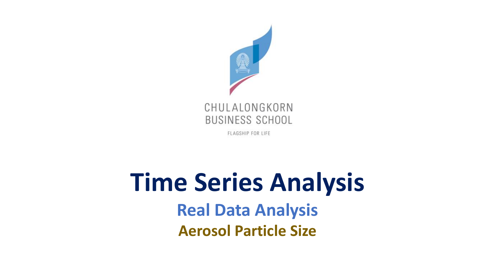
ข้อมูลชุดที่สองมาจากงานวิศวกรรม (Class 8, 1:11:24) เป็นตัวอย่างที่ข้อมูลยาว (559 ค่า) และ candidate สองตัวต้องตัดสินด้วย diagnostic
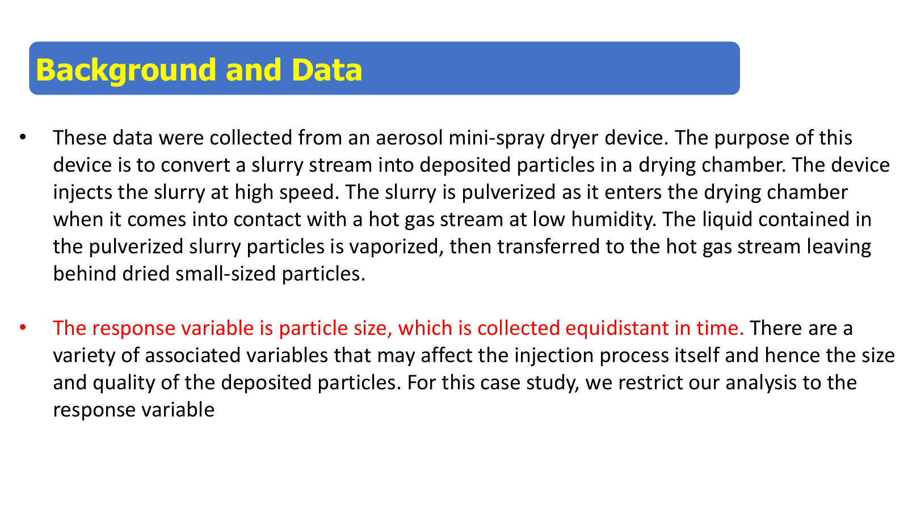
เครื่อง spray dryer ฉีดของเหลวข้นเข้าห้องอบด้วยความเร็วสูง ของเหลวแตกเป็นละอองเมื่อเจอแก๊สร้อน ความชื้นระเหยไปเหลืออนุภาคแห้ง ขนาดอนุภาคถูกวัดห่างเท่ากันตามเวลา
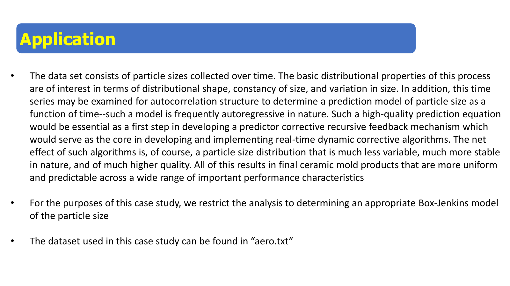
เป้าหมายคือสร้างสมการทำนายขนาดอนุภาคตามเวลา ซึ่งเป็นขั้นแรกของการควบคุมกระบวนการผลิตให้ได้ขนาดคงที่ สไลด์คาดว่าโมเดลมักออกมาเป็น autoregressive
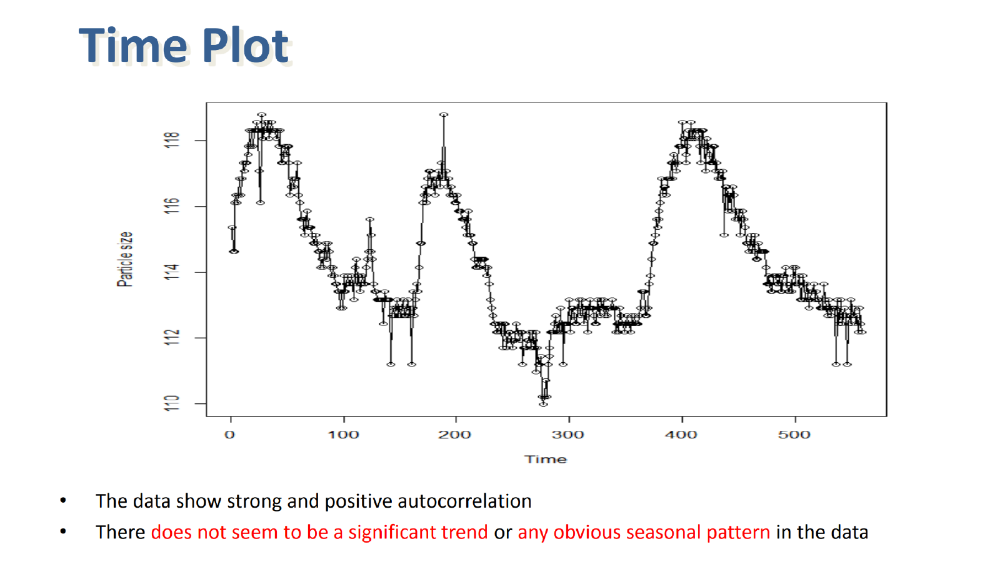
ค่าอยู่ระหว่างราว 110 ถึง 118 เคลื่อนขึ้นลงเป็นช่วงยาว ค่าติดกันใกล้กันมาก สไลด์สรุปว่ามี autocorrelation บวกสูง และ does not seem to be a significant trend หรือ any obvious seasonal pattern แต่การเดินเป็นช่วงยาวโดยไม่กลับมาที่ค่าเฉลี่ยคือลักษณะของอนุกรมไม่นิ่งแบบ random walk
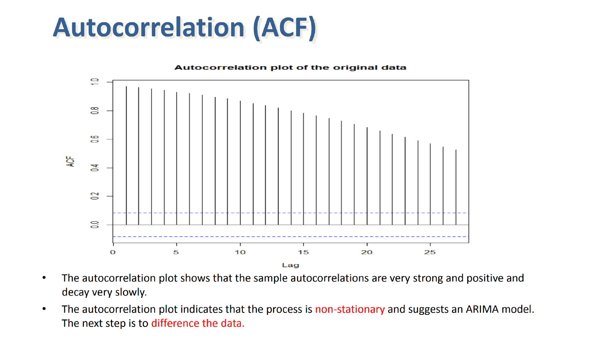
ACF สูงมากและลดช้า ยังเกิน 0.5 ที่ lag 27 สไลด์จึงสรุปว่าไม่นิ่ง และ difference the data.
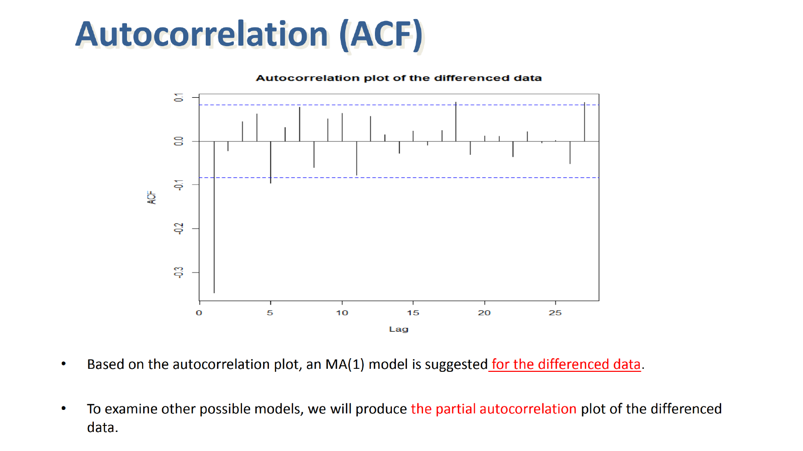
หลัง difference ACF มีแท่งเดียวที่ lag 1 ราว −0.35 แล้วส่วนใหญ่อยู่ในเส้น ±0.085 (n = 558) จึงแนะนำ MA(1) for the differenced data. และดู PACF ต่อเพื่อหาทางเลือกอื่น
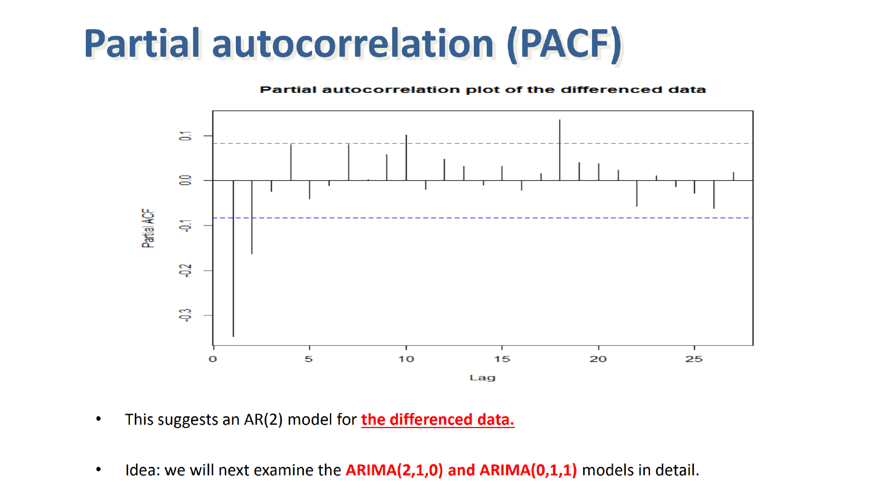
PACF ทะลุเส้นที่ lag 1 (ราว −0.34) และ lag 2 (ราว −0.17) แล้วตัด จึงแนะนำ AR(2) ของผลต่าง ได้ candidate สองตัว ARIMA(2,1,0) และ ARIMA(0,1,1) "ตรงกลางต้องเป็น 1 เพราะคุณมี differencing" (Class 8, 1:13:00–1:15:00)
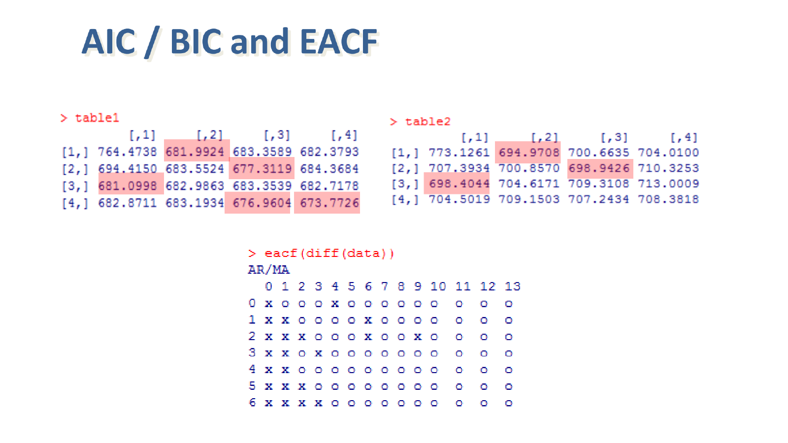
AIC ต่ำสุดในตารางคือ ARMA(3,3) 673.77 ตามด้วย ARMA(3,2) 676.96 แต่ BIC ต่ำสุดคือ ARMA(0,1) 694.97 และ ARMA(2,0) 698.40 ซึ่งตรงกับ candidate จาก ACF/PACF EACF มีลิ่ม o เริ่มที่ (0,1) สอดคล้องกับ MA(1) อาจารย์บอกว่า "ข้างหน้าผมจะไม่ทำพวกนี้แล้ว ผมจะใช้ auto.arima" (Class 8, 1:15:07)
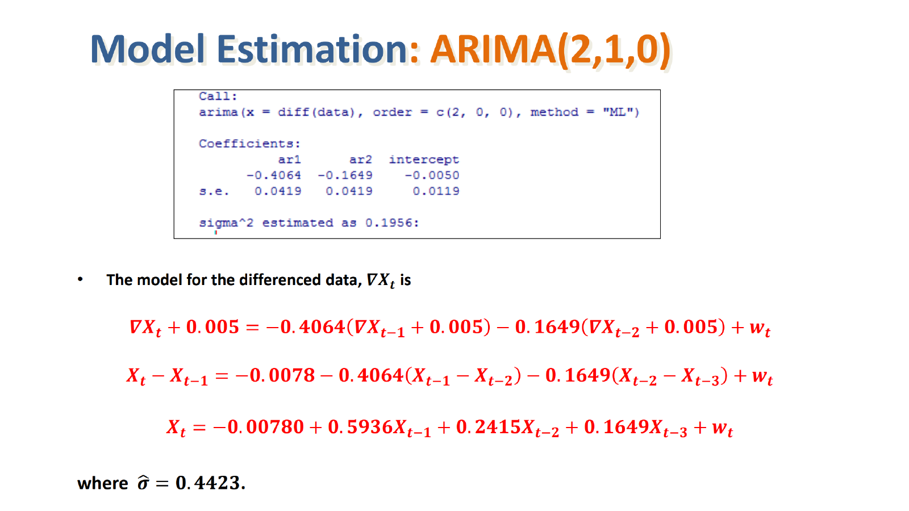
output นี้ฟิต AR(2) กับผลต่างของ aerosol ค่าสัมประสิทธิ์ทั้งสองติดลบ แปลว่าผลต่างที่ขึ้นมักตามด้วยผลต่างที่ลง
ar1 = −0.4064, ar2 = −0.1649, intercept = −0.0050, σ² = 0.1956
\(\nabla X_t+0.005=-0.4064(\nabla X_{t-1}+0.005)-0.1649(\nabla X_{t-2}+0.005)+w_t\), \(\hat\sigma=\sqrt{0.1956}=0.4423\) (ลบ intercept −0.005 จึงกลายเป็นบวก 0.005)
ค่าคงที่ \(=-0.005(1+0.4064+0.1649)=-0.0079\) ได้ \(X_t=-0.0078+0.5936X_{t-1}+0.2415X_{t-2}+0.1649X_{t-3}+w_t\) "ไม่ต้องทำถึงขั้นนั้นนะครับ"
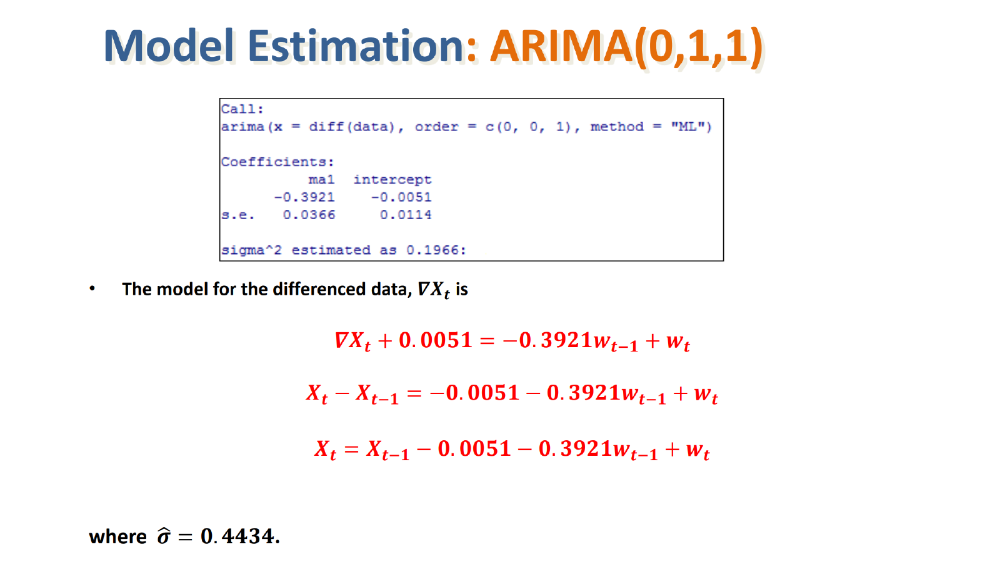
output: ma1 = −0.3921, intercept = −0.0051, σ² = 0.1966 เขียนได้ \(\nabla X_t+0.0051=-0.3921w_{t-1}+w_t\), \(\hat\sigma=0.4434\) หรือ \(X_t=X_{t-1}-0.0051-0.3921w_{t-1}+w_t\) (Class 8, 1:17:48) σ² ของสองโมเดลใกล้กันมาก (0.1956 กับ 0.1966) อาจารย์ถามในห้องว่าถ้าดีเท่ากันเลือกอะไร คำตอบคือ ARIMA(0,1,1) เพราะ parsimony "มีแค่เตตาตัวเดียว โมเดลเขียนง่ายกว่า" (Class 8, 1:18:35–1:19:56) แต่ต้องดู diagnostic ก่อน
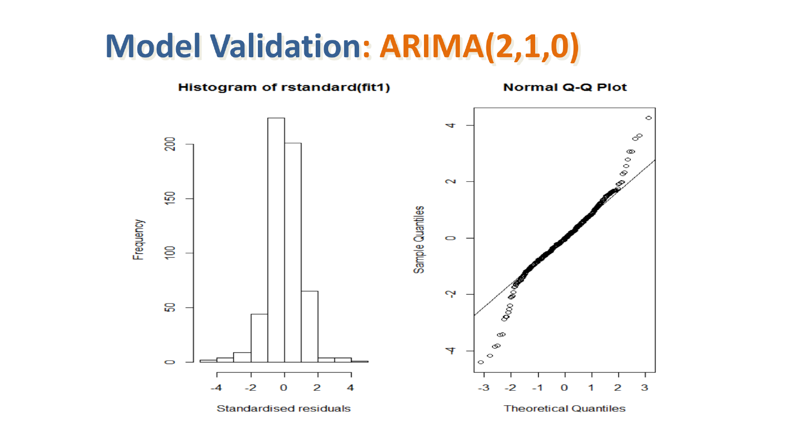
histogram แคบและสูงกว่า normal มีหางยาว QQ plot ปลายทั้งสองข้างแยกจากเส้นชัดเจน และ standardized residual สูงสุด 4.41 รันเองได้ Shapiro-Wilk p-value ใกล้ 0 จึงไม่ normal ทั้งสองโมเดล (ARIMA(0,1,1) ก็ได้ใกล้ 0) ข้อนี้สไลด์และในคลิปไม่ได้พูดถึง เป็นตัวอย่างว่าข้อมูลจริงมักผ่านไม่ครบทุกข้อ
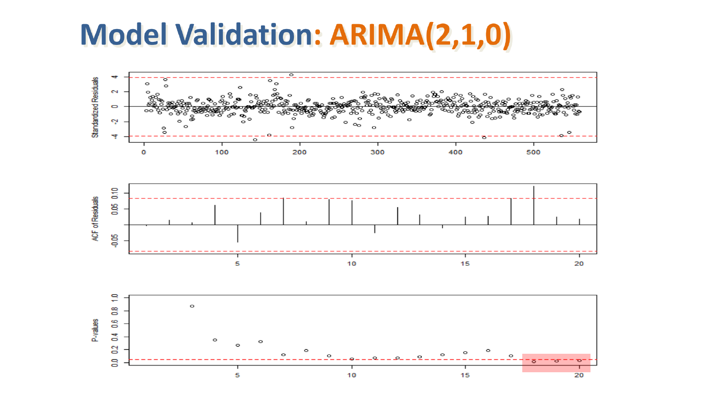
standardized residual มีบางจุดเกิน ±4 ACF ของ residual ส่วนใหญ่อยู่ในเส้น และ p-value ของ Ljung-Box ต่ำกว่า 0.05 เฉพาะ lag ท้าย ๆ ที่สไลด์ไฮไลต์: รันเองที่ H = 18, 19, 20 ได้ 0.015, 0.020, 0.027 อาจารย์ว่า "ไม่กี่จุดยังพอโอเค" (Class 8, 1:20:00)
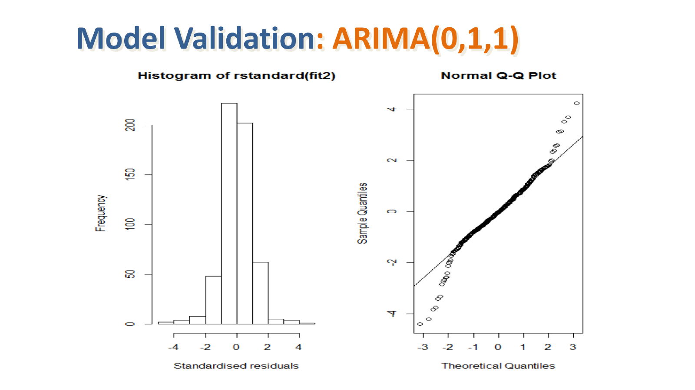
รูปร่างแทบเหมือน ARIMA(2,1,0): หางหนาทั้งสองข้าง และ standardized residual สูงสุด 4.40 ด้าน normality สองโมเดลจึงไม่ต่างกัน ต้องใช้เกณฑ์อื่นตัดสิน
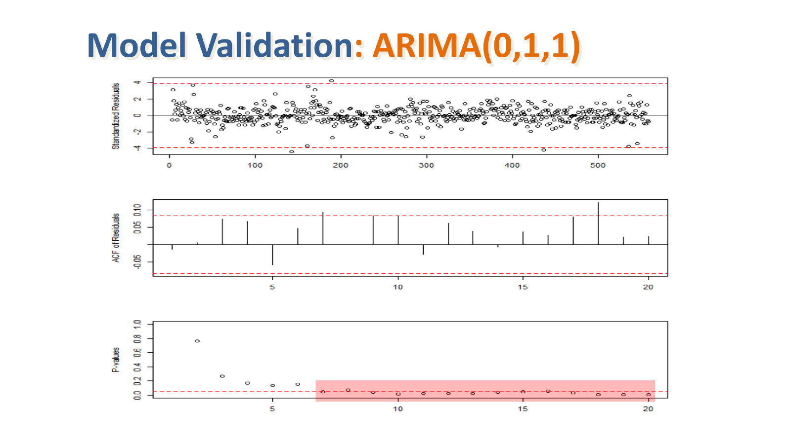
p-value ของ Ljung-Box ต่ำกว่า 0.05 หลายจุดตั้งแต่ราว lag 7 เป็นต้นไป รันเองได้ 0.043 ที่ H = 7, 0.015 ที่ H = 10 และ 0.007 ที่ H = 20 แปลว่า residual ยังมี autocorrelation รวมที่ MA(1) จับไม่หมด
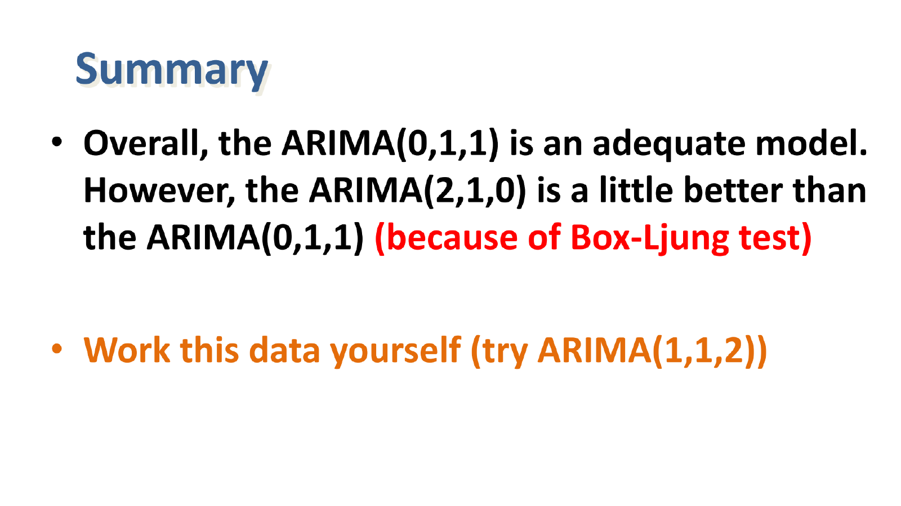
ข้อสรุป: ARIMA(0,1,1) พอใช้ได้ แต่ ARIMA(2,1,0) ดีกว่าเล็กน้อย (because of Box-Ljung test) แม้มีพารามิเตอร์มากกว่า กรณีนี้หลัก parsimony ใช้ไม่ได้เพราะ diagnostic ไม่เท่ากัน การบ้านบนสไลด์คือลอง ARIMA(1,1,2) รันแล้วได้ ar1 = 0.9445, ma1 = −1.3755, ma2 = 0.4341, σ² = 0.1935 AIC ต่ำกว่าทั้งสองตัว และ Ljung-Box ที่ H = 5, 10, 15, 20 คือ 0.052, 0.138, 0.272, 0.106 ผ่านทุกค่า จึงดีกว่าทั้งสอง ข้อสังเกต: ราก AR 1/0.9445 = 1.059 ใกล้รากหนึ่งของ MA (1.130) โมเดลจึงเกือบมีตัวประกอบร่วม ควรระวังเรื่อง redundancy
สไลด์ชุด FORECAST_AND_SARIMA หน้า 1–13 อยู่ในโฟลเดอร์ CLASS 8 แต่ในคลิปอาจารย์ไม่ได้ลงรายละเอียด บอกแค่ว่า "forecast ไม่ได้ยากเลย ใช้คำสั่ง forecast จบแล้ว ... ขั้นตอนนี้ [เลือกและตรวจโมเดล] สำคัญกว่า forecast" (Class 8, 1:22:22) และ "multi-step forecasting ผมยังไม่ได้ลง forecast ละเอียด" (Class 9-2, 1:01:03) หัวข้อนี้อธิบายสไลด์ให้ครบ เพราะความเข้าใจว่าค่าพยากรณ์มาจากไหนช่วยอ่าน output และช่วงพยากรณ์ได้ถูก
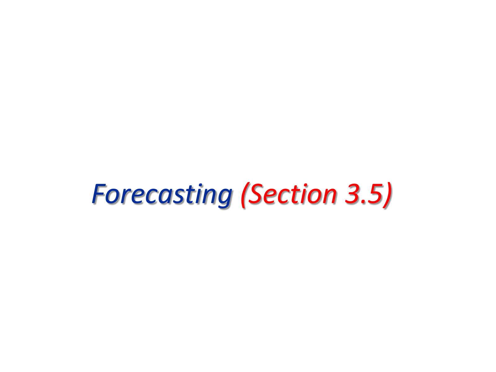
เนื้อหาตรงกับหนังสือ Section 3.5 ซึ่งเป็นทฤษฎีเบื้องหลังคำสั่ง predict() และ forecast()
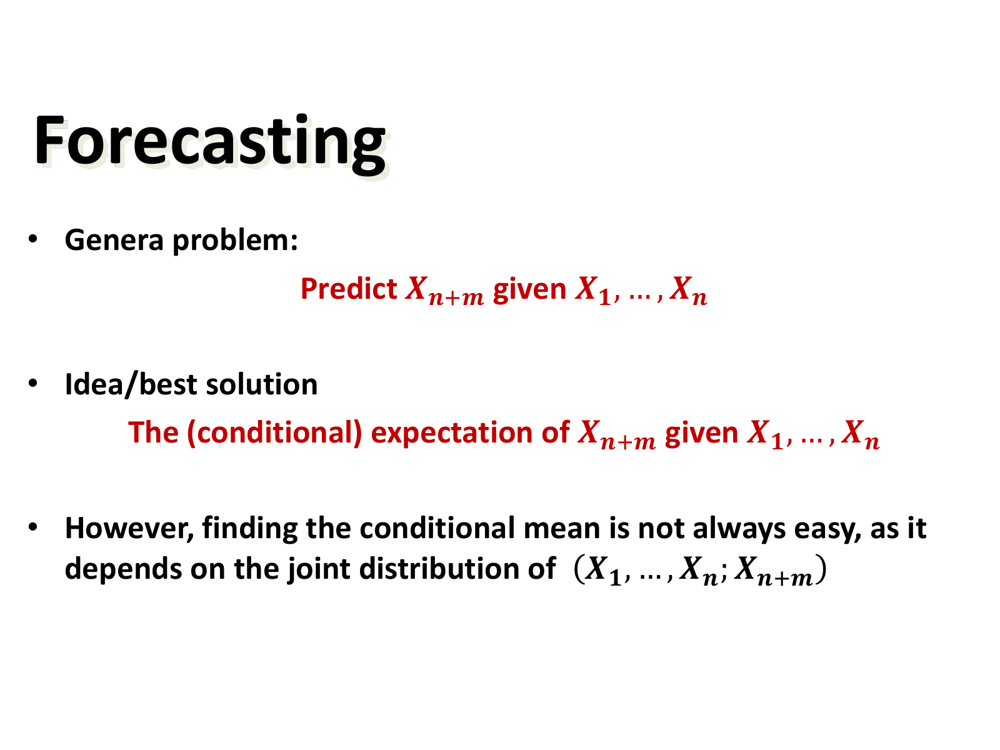
คำถามคือ เมื่อเห็นข้อมูลถึงเวลา n แล้ว ค่าเวลา n + m ควรเดาเป็นเท่าไร คำตอบที่ดีที่สุด (ทำให้ความคลาดเคลื่อนกำลังสองเฉลี่ยต่ำสุด) คือค่าคาดหมายแบบมีเงื่อนไข \(E(X_{n+m}\mid X_1,\dots,X_n)\) ปัญหาคือการหาค่านี้ต้องรู้การแจกแจงร่วมของทุกตัวแปร ซึ่งปกติไม่รู้
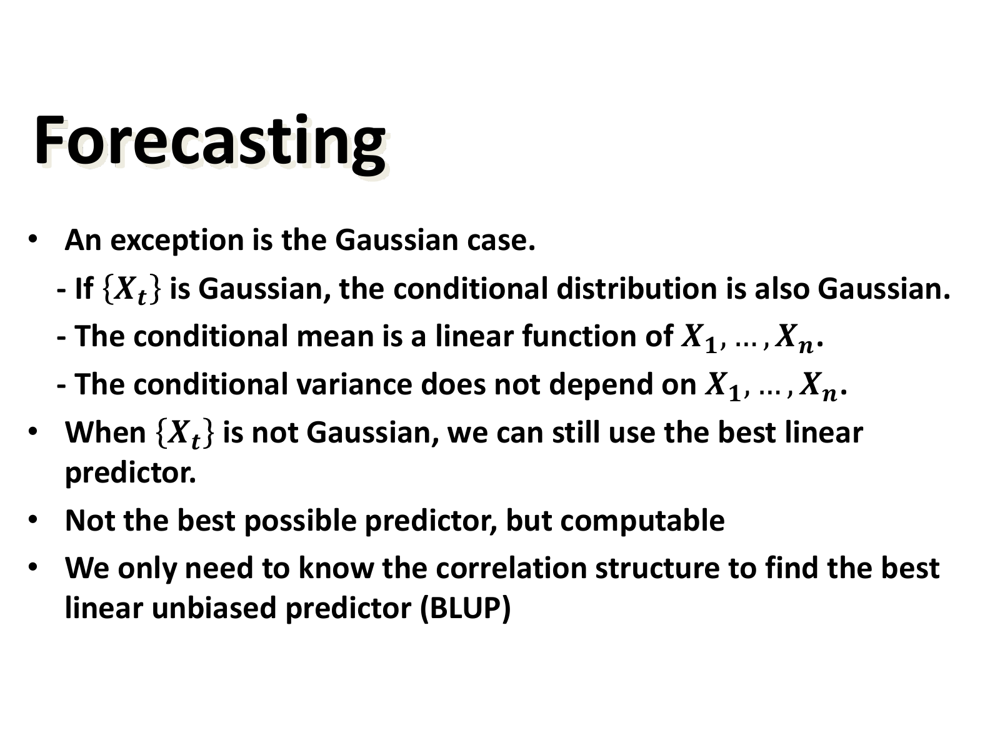
ถ้าข้อมูลเป็น Gaussian ค่าคาดหมายแบบมีเงื่อนไขเป็นฟังก์ชันเชิงเส้นของ \(X_1,\dots,X_n\) และ variance แบบมีเงื่อนไขไม่ขึ้นกับค่าที่เห็น ถ้าไม่ใช่ Gaussian ก็ยังใช้ best linear unbiased predictor (BLUP) ได้ ซึ่งอาจไม่ดีที่สุดในทุกตัวพยากรณ์ แต่คำนวณได้ และต้องรู้เพียงโครงสร้าง correlation
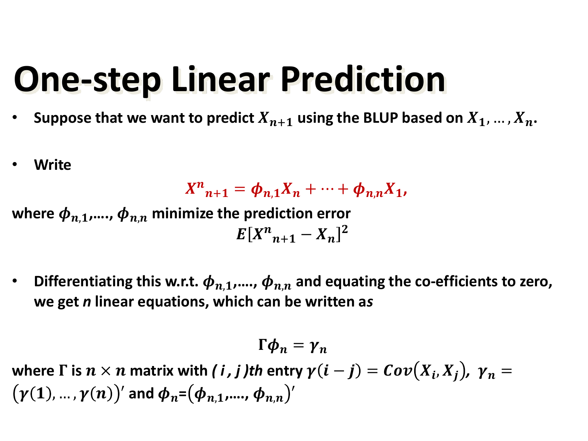
BLUP หนึ่งก้าวเขียนเป็น \(X_{n+1}^n=\phi_{n,1}X_n+\dots+\phi_{n,n}X_1\) เลือกน้ำหนักให้ \(E(X_{n+1}^n-X_{n+1})^2\) ต่ำสุด หาอนุพันธ์แล้วตั้งเท่าศูนย์ได้ระบบสมการ \(\Gamma\phi_n=\gamma_n\) ซึ่งหน้าตาเหมือน Yule-Walker ใน Lesson 7 ตัวอย่าง n = 1: \(\gamma_0\phi_{1,1}=\gamma_1\) ได้ \(\phi_{1,1}=\rho_1\) คือพยากรณ์ด้วย \(\rho_1X_1\)
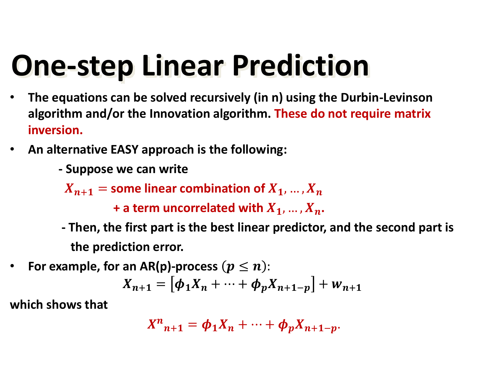
ระบบสมการแก้ได้แบบวนซ้ำด้วย Durbin-Levinson These do not require matrix inversion. แต่มีวิธีที่ง่ายกว่า: ถ้าเขียน \(X_{n+1}\) = (ผลรวมเชิงเส้นของ X ที่เห็นแล้ว) + (ส่วนที่ไม่สัมพันธ์กับ X ในอดีต) ส่วนแรกคือ BLUP ส่วนที่สองคือความคลาดเคลื่อน ตัวอย่าง AR(p): \(X_{n+1}=[\phi_1X_n+\dots+\phi_pX_{n+1-p}]+w_{n+1}\) จึงได้ \(X_{n+1}^n=\phi_1X_n+\dots+\phi_pX_{n+1-p}\) คือแทนค่าที่รู้ลงในสมการแล้วตั้ง shock ในอนาคตเป็นศูนย์
หน้า 6–8 ของไฟล์เป็นหน้าว่าง น่าจะเป็นที่ว่างให้เขียนตัวอย่างในห้อง ตัวอย่างที่ใช้แทนอยู่ในกล่องคำนวณข้างล่าง
\(X_t-50=0.8(X_{t-1}-50)+w_t\), σ² = 4 และค่าสุดท้าย \(X_n=60\)
\(X_{n+1}^n=50+0.8(10)=58\) ความคลาดเคลื่อนคือ \(w_{n+1}\) MSPE = σ² = 4
\(X_{n+2}=50+0.8(X_{n+1}-50)+w_{n+2}\) แทน \(X_{n+1}=58+w_{n+1}\) ได้ \(X_{n+2}^n=50+0.64(10)=56.4\) ความคลาดเคลื่อน \(w_{n+2}+0.8w_{n+1}\) MSPE = 4(1 + 0.64) = 6.56
\(X_{n+h}^n=50+0.8^h(10)\) เข้าหา 50 และ MSPE \(=\sigma^2(1+\phi^2+\dots+\phi^{2(h-1)})\to\sigma^2/(1-\phi^2)=4/0.36=11.1\)
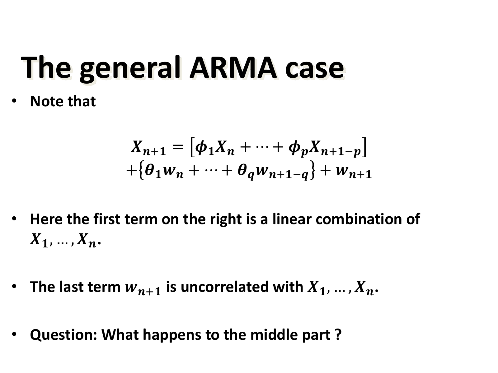
\(X_{n+1}=\phi_1X_n+\dots+\phi_pX_{n+1-p}+\theta_1w_n+\dots+\theta_qw_{n+1-q}+w_{n+1}\) ส่วนแรกรู้ค่าแล้ว ส่วนสุดท้ายไม่สัมพันธ์กับอดีต คำถามคือส่วนกลาง \(\theta_1w_n+\dots\) ซึ่งเป็น shock ในอดีตที่เราไม่เห็นโดยตรง
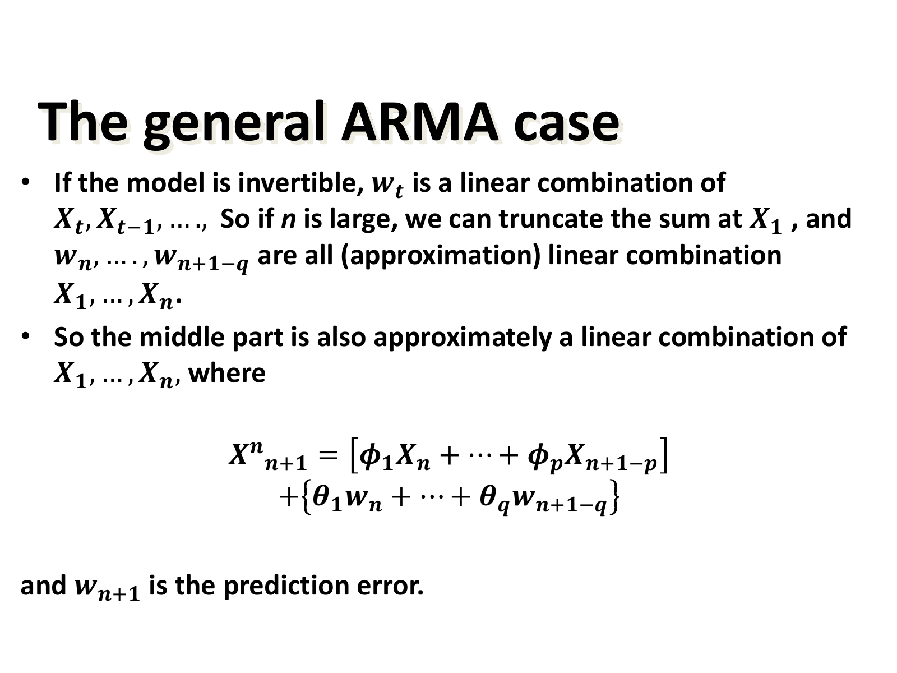
คำตอบเชื่อมกับ Lesson 7: ถ้าโมเดล invertible \(w_t\) เขียนได้เป็นผลรวมเชิงเส้นของ \(X_t,X_{t-1},\dots\) เมื่อ n ใหญ่ ตัดที่ \(X_1\) ได้ ส่วนกลางจึงคำนวณได้ประมาณ ในทางปฏิบัติใช้ residual ของโมเดลแทน w ในอดีต นี่คือคำตอบเชิงปฏิบัติของคำถาม "ทำไมต้อง invertible" ใน Lesson 7
φ̂ = −0.6169, θ̂ = −0.7233, μ̂ = 0.0235, ค่าสุดท้าย \(X_{150}=-2.9693\), residual สุดท้าย \(\hat w_{150}=-1.9058\)
\(X_{151}^{150}=\mu+\phi(X_{150}-\mu)+\theta\hat w_{150}=0.0235+(-0.6169)(-2.9928)+(-0.7233)(-1.9058)\)
\(=0.0235+1.8463+1.3785=3.248\) ตรงกับ predict(nat, n.ahead = 1)
\(X_{152}^{150}=0.0235+(-0.6169)(3.248-0.0235)=-1.966\)
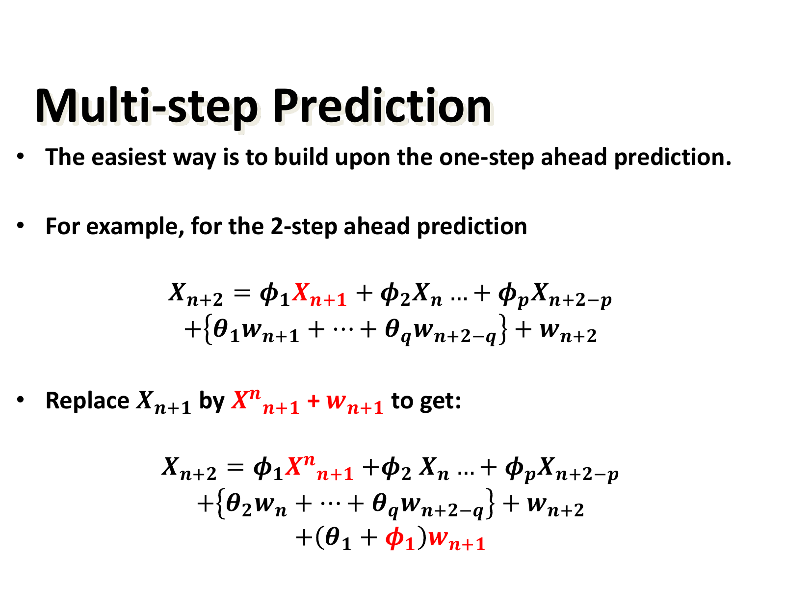
สองก้าว: เขียนสมการของ \(X_{n+2}\) แล้วแทน \(X_{n+1}=X_{n+1}^n+w_{n+1}\) พจน์ \(w_{n+1}\) ปรากฏสองที่ คือผ่าน φ₁ และผ่าน θ₁ รวมกันเป็น \((\theta_1+\phi_1)w_{n+1}\)
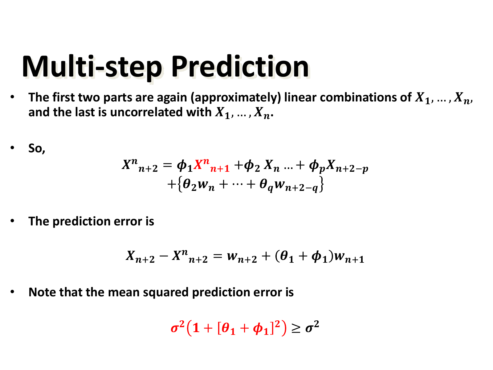
ความคลาดเคลื่อนสองก้าวคือ \(w_{n+2}+(\theta_1+\phi_1)w_{n+1}\) จึงได้ MSPE \(=\sigma^2[1+(\theta_1+\phi_1)^2]\ge\sigma^2\) ตรวจกับ times: \(1.57[1+(-0.6169-0.7233)^2]=1.57(2.796)=4.390\) ราก \(=2.095\) ตรงกับ se ของก้าวที่สองที่ R รายงาน
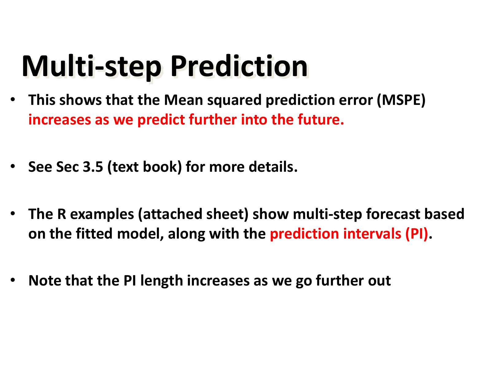
สรุป: MSPE เพิ่มขึ้นตามระยะพยากรณ์ ช่วงพยากรณ์ (prediction interval) จึงกว้างขึ้น สำหรับอนุกรมนิ่ง ความกว้างเข้าหาค่าคงที่ (times: se ก้าวที่ 20 = 2.474 เกือบเท่า SD ของข้อมูล 2.468) แต่สำหรับอนุกรมที่มี d ≥ 1 ความกว้างโตต่อไปไม่สิ้นสุด เพราะ variance ของ random walk โตตามเวลา (Lesson 1)
nat <- arima(data, order = c(1,0,1), method = 'ML')
nat.predict <- predict(nat, n.ahead = 20)
round(nat.predict$pred, 3)
round(nat.predict$se, 3)
lower.pi <- nat.predict$pred - qnorm(0.975, 0, 1) * nat.predict$se
upper.pi <- nat.predict$pred + qnorm(0.975, 0, 1) * nat.predict$se| โค้ด | ทำอะไร |
|---|---|
| predict(nat, n.ahead = 20) | พยากรณ์ 20 ก้าว คืนสองส่วน: $pred (ค่าพยากรณ์) และ $se (รากของ MSPE) |
| qnorm(0.975, 0, 1) | 1.96 ค่าวิกฤตของ normal สำหรับช่วง 95% |
| pred ± 1.96 se | prediction interval 95% สมมุติว่า error เป็น normal (จึงต้องตรวจ normality ในหัวข้อ 2) |
ก้าว pred se lower upper 1 3.248 1.253 0.792 5.704 2 -1.966 2.095 -6.072 2.141 3 1.251 2.337 -3.331 5.832 10 -0.018 2.474 -4.868 4.831 20 0.023 2.474 -4.826 4.873
ค่าพยากรณ์แกว่งสลับเครื่องหมายแล้วเข้าหา 0.0235 ส่วน se เพิ่มจาก 1.253 เป็น 2.474 แล้วคงที่ ตรงตามทฤษฎีหัวข้อ 7
อุณหภูมิ: predict(arima(t, order = c(1,1,1)), n.ahead = 5) ได้ 0.3435, 0.3147, 0.3052, 0.3020, 0.3009 สำหรับปี 1998–2002 ตรวจหนึ่งก้าวด้วยมือ: \(\hat X_{1998}=X_{1997}+\phi(X_{1997}-X_{1996})+\theta\hat w_{1997}=0.43+0.3326(0.21)-0.7887(0.1982)=0.3435\) se = 0.109, 0.124, 0.131, 0.136, 0.141 โตต่อไปเรื่อย ๆ เพราะ d = 1 aerosol ARIMA(2,1,0): 112.365, 112.332 และ 112.325 ที่ก้าว 12 ใกล้ค่าสุดท้าย 112.185 เพราะผลต่างพยากรณ์เข้าหา 0 se จาก 0.442 เป็น 1.026
R_codes มีส่วนท้ายที่ comment ไว้: ฟิต arima(log(data), order = c(0,1,1)) แล้ว exp(predict(...)$pred) เพื่อแปลงกลับ (Lesson 7) ช่วงพยากรณ์ก็แปลงด้วย exp ทั้งสองขอบ ช่วงที่ได้จึงไม่สมมาตรรอบค่าพยากรณ์ เช่น log scale 5 ± 0.2 ได้ [e^4.8, e^5.2] = [121.5, 181.3] รอบ e^5 = 148.4 ซึ่งห่างลงล่าง 26.9 แต่ขึ้นบน 32.9
ไฟล์ R_codes.txt และ aero.txt อยู่ในโฟลเดอร์ CLASS 8 ส่วน times.txt อยู่ใน CLASS 7 และ temp.txt อยู่ใน CLASS 2
\(Q=120(122)\left(\dfrac{0.0225}{119}+\dfrac{0.01}{118}+\dfrac{0.0025}{117}\right)=14640(0.000189+0.0000847+0.0000214)=14640(0.000294)=4.31\)
df = H − p − q = 3 − 1 − 1 = 1 เนื่องจาก 4.31 > 3.84 จึง reject H0 โมเดลยังไม่เหมาะสม แม้ ACF แต่ละ lag (0.15, 0.10, 0.05) จะอยู่ในเส้น 2/√120 = 0.183 ทั้งหมด
ก้าว 1: \(0.0235+(-0.6169)(-2.9928)+(-0.7233)(-1.9058)=3.248\) se = √1.57 = 1.253 ช่วง 3.248 ± 1.96(1.253) = [0.792, 5.704]
ก้าว 2: \(0.0235-0.6169(3.248-0.0235)=-1.966\) se = \(\sqrt{1.57[1+(-1.3402)^2]}=2.095\) ช่วง −1.966 ± 4.106 = [−6.072, 2.141]
(ก) \(X_{n+2}=\phi X_{n+1}+\theta w_{n+1}+w_{n+2}\) แทน \(X_{n+1}=X^n_{n+1}+w_{n+1}\) ได้ \(X_{n+2}=\phi X^n_{n+1}+(\phi+\theta)w_{n+1}+w_{n+2}\) ส่วนแรกรู้ค่าเป็นค่าพยากรณ์ ส่วนที่เหลือคือความคลาดเคลื่อน MSPE = σ²[1 + (φ + θ)²]
(ข) \(X_{n+h}-\mu=\phi(X_{n+h-1}-\mu)+w_{n+h}\) แทนซ้ำ h ครั้ง ได้ \(\phi^h(X_n-\mu)+\sum_{j=0}^{h-1}\phi^jw_{n+h-j}\) ส่วนแรกคือค่าพยากรณ์ MSPE \(=\sigma^2\sum_{j=0}^{h-1}\phi^{2j}=\sigma^2\dfrac{1-\phi^{2h}}{1-\phi^2}\to\dfrac{\sigma^2}{1-\phi^2}=\gamma_0\)
shapiro.test(rstandard(fit)) ได้ W = 0.912, p-value = 0.002 หมายความว่าอย่างไรfit <- arima(diff(y), order = c(1,0,1)) แล้วใช้ forecast(fit) ไปคำนวณ RMSE กับค่าจริงของ y ได้ RMSE สูงมาก สาเหตุหลักคือข้อใดparsimony ใช้เมื่อโมเดลผ่าน diagnostic พอกัน ในกรณีนี้ ARIMA(0,1,1) มี p-value ของ Ljung-Box ต่ำกว่า 0.05 หลายจุดตั้งแต่ราว lag 7 (0.043 ที่ H = 7, 0.007 ที่ H = 20) แปลว่า residual ยังมี autocorrelation ที่ MA(1) จับไม่ได้ ส่วน ARIMA(2,1,0) ต่ำกว่า 0.05 เฉพาะ lag 18–20 จึงดีกว่า
ทั้งสองไม่ผ่าน normality (Shapiro p ≈ 0 หางหนา) จึงใช้เกณฑ์นี้แยกไม่ได้ และ ARIMA(1,1,2) ที่สไลด์ให้ลองผ่าน Ljung-Box ทุก H ที่ทดสอบ
จาก output นี้ โมเดลที่เขียนถูกคือข้อใด
arima(x = diff(y), order = c(1, 0, 1))
Coefficients:
ar1 ma1 intercept
0.5000 -0.4000 0.0200ผลของสอง candidate กับข้อมูลชุดหนึ่ง ควรเลือกอะไร
AIC Shapiro p Ljung-Box p (H = 5, 10, 20) ARIMA(0,1,1) 412.3 0.41 0.02, 0.01, 0.00 ARIMA(1,1,1) 413.1 0.38 0.47, 0.62, 0.71
เขียนข้อสรุป diagnostic ของ ARIMA(1,1,1) อุณหภูมิจากผลนี้ ในรูปแบบที่ใช้ตอบข้อสอบ
shapiro.test(rstandard(nat)): W = 0.9864, p-value = 0.1798 max |standardized residual| < 3 ACF ของ residual: อยู่ในเส้นทุก lag Ljung-Box p (H = 5, 10, 15, 20): 0.182, 0.538, 0.693, 0.823
Normality: Shapiro-Wilk p = 0.1798 > 0.05 ไม่ reject H0 residual normal Outlier: standardized residual อยู่ใน ±3 ทั้งหมด Independence: ACF ของ residual อยู่ในเส้น และ Ljung-Box p > 0.05 ทุก H ไม่ reject H0 ที่ว่าโมเดลเหมาะสม
สรุป ARIMA(1,1,1) เพียงพอ ใช้พยากรณ์ได้
รันโค้ดนี้แล้วเทียบผล (เริ่ม R ใหม่ ไม่โหลด TSA ก่อน)
t <- ts(read.table("temp.txt"), start = 1856)
f1 <- arima(diff(t), order = c(1,0,1), method = "ML")
f2 <- arima(t, order = c(1,1,1))
f1; f2
shapiro.test(residuals(f1) / sqrt(f1$sigma2))
Box.test(residuals(f1), lag = 10, type = "Ljung", fitdf = 2)
predict(f2, n.ahead = 3)f1: ar1 0.3481 ma1 -0.8278 intercept 0.0049 sigma^2 0.01156 aic = -220.12 f2: ar1 0.3326 ma1 -0.7887 sigma^2 0.01185 aic = -218.76 Shapiro p ≈ 0.18 Ljung-Box (lag 10, df 8): p-value = 0.5378 predict f2: 0.3435 0.3147 0.3052 se: 0.1089 0.1239 0.1311
ถ้าโหลด TSA ก่อน aic ที่พิมพ์จะเป็น −222.12 และ −220.76 (ต่ำกว่า 2) แต่ AIC() เท่าเดิม ค่า Shapiro ที่ใช้ residual/σ̂ อาจต่างจาก rstandard() ของ TSA เล็กน้อยในหลักทศนิยมท้าย
ลอง ARIMA(1,1,2) กับ aero.txt ตามสไลด์หน้า 39 แล้วเทียบกับ ARIMA(2,1,0)
a <- ts(read.table("aero.txt"))
g3 <- arima(a, order = c(1,1,2), method = "ML"); g3
sapply(c(5,10,15,20), function(h) Box.test(residuals(g3), lag = h, type = "Ljung", fitdf = 3)$p.value)
polyroot(c(1, -1.3755, 0.4341))ar1 0.9445 (0.0322) ma1 -1.3755 (0.0499) ma2 0.4341 (0.0405) sigma^2 0.1935 aic = 675.33 (ARIMA(2,1,0) aic = 677.27) Ljung-Box p: 0.052 0.138 0.272 0.106 polyroot: 1.130 2.039
ARIMA(1,1,2) มี AIC ต่ำกว่าและผ่าน Ljung-Box ทุก H จึงดีกว่า แต่ราก AR = 1/0.9445 = 1.059 ใกล้ราก MA 1.130 สองตัวประกอบ (1 − 0.9445B) กับ (1 − 0.885B) เกือบหักล้างกัน ควรรายงานข้อนี้ด้วย
บทถัดไป: Lesson 9 — SARIMA
| หน้า | เนื้อหา | สอนที่ |
|---|---|---|
| 1–4 | ปก, residual, standardized residual | หัวข้อ 1 |
| 5–6 | Normality | หัวข้อ 2 |
| 7–10 | ACF ของ residual, Ljung-Box, tsdiag | หัวข้อ 3 |
| 11–17 | อุณหภูมิ: ข้อมูล, ACF/PACF, AIC/BIC | หัวข้อ 4 |
| 18–20 | Difference ก่อนหรือใน ARIMA | หัวข้อ 5 |
| 21–24 | อุณหภูมิ: estimation และ validation | หัวข้อ 4 |
| 25–39 | Aerosol particle size | หัวข้อ 6 |
| หน้า | เนื้อหา | สอนที่ |
|---|---|---|
| 1–5 | Forecasting, BLUP, one-step | หัวข้อ 7 |
| 6–8 | หน้าว่าง | etc — ไม่มีเนื้อหา |
| 9–13 | ARMA ทั่วไป, multi-step, MSPE | หัวข้อ 7 |
| 14–52 | Seasonal ARIMA | etc — สอนใน Lesson 9 |
| แหล่ง | ช่วงที่ใช้ | หัวข้อ |
|---|---|---|
| Class 8 | 0:26–1:23 | 1–6 |
| Class 9-2 | 1:01 (multi-step), 1:13–1:17 (diff ก่อนหรือใน ARIMA) | 5, 7 |
| R_codes.txt, aero.txt (CLASS 8); R_codes.txt, times.txt (CLASS 7); temp.txt (CLASS 2) | ทั้งไฟล์ | 1–9 |